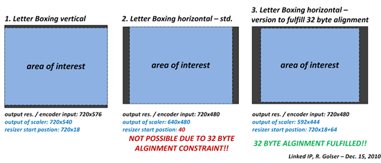

Hi,
I’m attempting to run my application full-screen while forcing a lower resolution then the current screen resolution (force a video mode change). I cannot seem to make this work properly. I can see from Source/Engine/Graphics/OpenGL/OGLGraphics.cpp that SDL_CreateWindow() is invoked with the SDL_WINDOW_FULLSCREEN flags, which should force a video mode change according to the docs, but I seem to get some weird behaviour regarding the resolution used. On Linux the app runs full screen, but the video mode is not changed - always runs at 1920x1080, which is the default desktop resolution. That might be an issue with my xorg config, but on windows the video mode is changed, but the resolution I specify does not seem to be respected - this is how the engine parameters are specified.
engineParameters_["FullScreen"] = true;
engineParameters_["Headless"] = false;
engineParameters_["WindowWidth"] = 1600;
engineParameters_["WindowHeight"] = 900;The following results in vertical letterboxing, similar to the example in the middle here:

It seems that when on full screen, then the incorrect resolution is used (looks to be 4:3 instead of 16:9 as specified). The correct resolution is however used when in windowed mode (fullscreen=false).
Has anybody else experienced this issue, and / or have any advice before I debug the code further?
Thanks